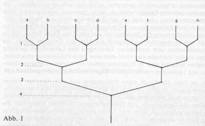
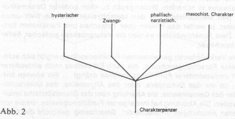
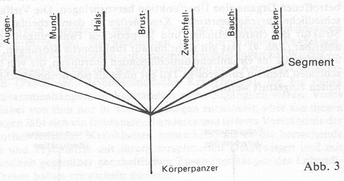

|
Orgonomischer
Funktionalismus - Wilhelm Reichs Forschungsmethode (1982)
Von Bernd Senf Vollständiger
Artikel als PDF Datei (33 Seiten)
Die Vielfalt der Gebiete, auf denen Wilhelm
Reich grundlegende Forschungen betrieben hat, erscheint auf den ersten
Blick mehr als verwirrend. Allein die Tatsache, dass er in Bereichen, die
scheinbar nichts miteinander zu tun haben, zu umwälzenden Erkenntnissen
gekommen sein will, ist für viele schon Grund genug, ihn von vornherein
als wissenschaftlichen Laien einzustufen und nicht ernst zu nehmen oder
ihn gar als Spinner abzutun. Auf der anderen Seite deutet immer mehr
darauf hin, dass die herrschenden Wissenschaften mit ihren traditionellen
Forschungsmethoden und mit ihrer Aufspaltung in einzelne Disziplinen gegenüber
der grundlegenden Erklärung und Bewältigung lebensfeindlicher Tendenzen
nicht nur hilflos sind, sondern sogar mit zu ihrer Verstärkung beitragen.
Meine These ist die, dass für Reich die
Aufdeckung grundlegender Zusammenhänge über die Zerstörung des
Lebendigen überhaupt nur dadurch gelingen konnte, dass er mit einer
grundsätzlich andersartigen Forschungsmethode an die Untersuchung von
Mensch, Natur und Gesellschaft herangegangen ist als die herrschenden
Wissenschaften. Ich will im folgenden versuchen, das Besondere der
Reichschen Forschungsmethode herauszuarbeiten, nicht nur, um den
Forschungsprozess von Reich selbst in seinem inneren Zusammenhang besser
verständlich werden zu lassen; sondern auch, um zu sensibilisieren gegenüber
dem erkenntniszerstörenden Charakter herrschender Wissenschaften. Die
bewusste und kreative Anwendung der Reichschen Forschungsmethode scheint
mir eine wesentliche Grundlage zu sein für die Entwicklung einer
emanzipatorischen Wissenschaft, die mit dazu beitragen kann, das
Lebendige aus der Herrschaft des Erstarrten zu befreien und die mit dieser
Herrschaft verbundenen destruktiven Tendenzen auf den verschiedensten
Ebenen umzukehren.
I.
Vorläufer der funktionellen Denkmethode
Reich hat sich erst relativ spät
systematisch zu seiner Forschungsmethode geäußert, und zwar in einem
1945 geschriebenen Aufsatz über „Orgonomischen Funktionalismus“,
der in seinem 1949 erschienenen Buch „Ether, God and Devil“ abgedruckt
ist (*1). Ansätze zu methodischen Betrachtungen finden sich schon in früheren
Veröffentlichungen: einmal im Rahmen des Artikels „Dialektischer
Materialismus und Psychoanalyse“ (*2), danach in dem Aufsatz über
„Dialektischer Materialismus in der Lebensforschung“ (*3) und schließlich
im Rahmen der Veröffentlichung über seine biophysikalischen Grundlagenforschungen
zur Biogenese („Die Bione“) (*4). Während er bis dahin seine sexualökonomischen
und biophysikalischen Forschungen noch als konkrete Anwendung der
dialektisch-materialistischen Erkenntnismethode im Bereich der
Erforschung des Lebendigen verstand, gab er seiner Forschungsmethode später
den Namen „Orgonomischer Funktionalismus“ - dies nicht zuletzt
deshalb, um sich gegenüber den ideologischen Verdrehungen und der
politischen Praxis des Stalinismus abzugrenzen, durch die der ursprünglich
emanzipatorische Gehalt der marxistischen Theorie (und ihrer
erkenntnistheoretischen Grundlage: des dialektischen Materialismus)
vollständig ins Gegenteil verkehrt worden war und wodurch jeder
marxistische Begriff mit diesen Entstellungen in Verbindung gebracht
wurde.
Bis
zuletzt hat Reich nicht für sich in Anspruch genommen, eine prinzipiell
neue Forschungsmethode entwickelt oder als erster angewendet zu haben.
Vielmehr betont er, dass die seinen Forschungen zugrundeliegende
Erkenntnismethode mindestens in Ansätzen schon von anderen verwendet
wurde:
„Obgleich die funktionelle
Denktechnik hier zum erstenmal systematisch beschrieben wird, wurde sie
doch von vielen Forschern mehr oder minder bewusst angewendet, ehe sie die
starren Grenzen in der Naturforschung endgültig in Form der Orgonomie überwand.
Ich möchte nun die wichtigsten Namen nennen, deren Träger ich viel zu
danken habe: De Coster, Dostojewski, Albert Lange, Friedrich Nietzsche,
Lewis Morgen, Charles Darwin, Friedrich Engels, Semon, Bergson, Freud,
Malinowski unter anderen. Wenn ich früher sagte, ich hätte mich in einen
„neuen Denkbereich“ hineingestellt gefunden, so ist das nicht so
aufzufassen, als ob der energetische Funktionalismus „fertig“ gewesen
(wäre) und auf mich nur gewartet hätte; oder dass ich mir die
Denktechnik von Bergson oder Engels einfach hätte aneignen und auf mein
Problemgebiet glatt anwenden können. Die Formung der Denktechnik war
selbst ein Stück Arbeit, die im Kampf meiner praktischen Tätigkeit als
Arzt und Forscher gegen die mechanistischen und mystischen Deutungen des
Lebendigen geleistet werden musste. Ich habe also nicht etwa eine „neue
Philosophie“ entwickelt, die neben anderen oder in Zusammenarbeit mit
anderen Lebensphilosophien das Lebendige menschlichem Begreifen nahe zu
bringen versucht.
Nein, es liegt überhaupt keine Philosophie vor, wie mancher meiner
Freunde glaubt. Es geht vielmehr um ein Denkwerkzeug, das man gebrauchen
lernen muss, wenn man das Lebendige erforschen und handhaben will. Es
fallen die Denkgesetze und Wahrnehmungsfunktionen zusammen, die man
beherrschen muss, wenn man Kinder und Jugendliche lebenspositiv in diese
Welt hineinwachsen lassen will; wenn man das Menschentier wieder in
Einklang mit seiner natürlichen Konstitution und mit der umgebenden Natur
bringen will ... Der Schutz des Lebendigen fordert das funktionelle Denken
(im Gegensatz zu Mechanismus und Mystizismus) als Kompass in dieser Welt,
wie der Schutz der Verkehrssicherheit gute Bremsen und tadellos
arbeitenden Signalapparate fordert“ (*5)
II.
Funktionalismus - Aufspüren gemeinsamer Funktionsprinzipien
Worin besteht das Wesentliche der
„funktionellen Forschungsmethode“, die von Reich zunächst mehr
intuitiv und später immer systematischer angewendet wurde und ihn auf den
verschiedensten Gebieten zu umwälzenden Erkenntnissen führte? Ich will
versuchen, dieses Wesentliche dadurch herauszuarbeiten, dass ich die
Forschungen Reichs, die ich an anderer Stelle inhaltlich ausführlich
skizziert habe (*6), noch einmal unter methodischem Gesichtspunkt
betrachte. Der inhaltliche Zusammenhang der Forschungen wird dabei als
bekannt vorausgesetzt. Ohne seine Kenntnis dürften die folgenden Ausführungen
nur schwer verständlich sein.
Ein
wesentliches Prinzip der funktionellen Forschungsmethode besteht darin,
unterschiedliche Erscheinungen der beobachteten Realität auf gleiche
tieferliegende Wurzeln, auf „gemeinsame Funktionsprinzipien“ (CFP =
Common Functioning Principle) zurückzuführen. Am deutlichsten lässt
sich diese Vorgehensweise mit dem Bild eines Baumes veranschaulichen: So
sehr sich jeder einzelne Zweig von anderen Zweigen unterscheidet, so
sehr entspringen sie doch alle gemeinsamen tieferliegenden Ästen, die
sich - wenn man immer tiefer geht - schließlich zurückführen lassen auf
einen gemeinsamen Stamm.

Abb. 1 will diesen Zusammenhang schematisch
darstellen. Die Zweige a und b haben bei oberflächlicher Betrachtung auf
der 1. Ebene nichts miteinander zu tun. Erst bei tiefergehender
Betrachtung zeigt sich, dass sie auf der 2. Ebene einem gemeinsamen Ast
entspringen. So sehr a und b auf dieser Ebene miteinander verbunden sind,
so wenig verbindet sie scheinbar mit den Zweigen c - h. Diese Beziehungen
offenbaren sich erst bei noch tiefergehender Betrachtung: Auf der 3. Ebene
wird deutlich, dass a/b und c/d auf eine gemeinsame tieferliegende Wurzel
zurückzuführen sind, und auf der 4. Ebene schließlich ergibt sich eine
noch tiefere gemeinsame Wurzel aller Zweige a - h.
Wenn es sich bei den
tieferliegenden Wurzeln jeweils um gemeinsame Funktionsprinzipien handelt,
die allen daraus abgeleiteten Erscheinungen zugrunde liegen, dann lassen
sich die unterschiedlichen Erscheinungen in ihrem Zusammenhang ganz anders
verstehen, als wenn die tiefere Wurzel unbekannt wäre: Das, was bei
oberflächlicher Betrachtung als zusammenhanglos erscheint, wird durch
die Aufdeckung gemeinsamer Wurzeln aus einem tieferen Zusammenhang heraus
verständlich. Die funktionelle Denkmethode leugnet nicht die Unterschiede
der einzelnen Erscheinungen, aber sie sucht vor allem nach den
tieferliegenden gemeinsamen Funktionsprinzipien, die den unterschiedlichen
Erscheinungen zugrunde liegen. Reich schreibt zu dieser Methode:
„Der
Unterschied grundsätzlicher Natur zwischen Orgonomischem Funktionalismus
und allen anderen Denkmethoden besteht darin, dass der lebendige
Organismus nicht nur direkt verknüpft, sondern überdies nach einer
gemeinsamen, dritten und tieferen Funktionsbeziehung sucht. Es folgt nun
einfach und logisch aus dieser Verknüpfung zweier Funktionen über ein
drittes und gemeinsames Funktionsprinzip:
1.
Sämtliche existierenden Funktionen werden im Fortschritt der Erkenntnis
einfacher und nicht komplizierter. Hier befindet sich der Orgonomische
Funktionalismus in scharfem Widerspruch zu allen anderen Denkmethoden. Für
den Mechanisten und den Metaphysiker wird die Welt um so komplizierter, je
weiter das Wissen über Tatsachen und Funktionen fortschreitet. Dem
Funktionalisten werden die Naturprozesse einfacher, heller und
durchsichtiger.
2. Mit dem Verknüpfen im gemeinsamen Funktionsprinzip ergibt sich automatisch
eine Forschungsrichtung, die nach Erkenntnis noch einfacherer und noch
umfassenderer Funktionsprinzipien drängt ... Wir können entscheiden,
ob wir das Besondere, oder das Allgemeine, das Unterscheidende oder das
Gemeinsame, die Abartung oder das Grundsätzliche untersuchen wollen.
Die Abartung hat ihre eigenen Funktionsgesetze, die sie von den anderen
Abartungen unterscheidet. Gleichzeitig gehorcht die Abartung dem
allgemeinen Funktionsprinzip ihres Ursprungs ...“ (*7)
„Die
mechanistische Denkweise bevorzugt das Unterscheidende, übersieht gewöhnlich
das Gemeinsame, und wird daher starr und scharf trennend. Die funktionelle
Denkweise ist zunächst einmal am Gemeinsamen interessiert, da die
Betrachtung des Gemeinsamen tiefer und weiter führt ... Das Gemeinsame
ist immer auch dasjenige, das auf gemeinsamen Ursprung hinweist. Die
Erforschungen gemeinsamer Funktionen verschiedener Erscheinungen ist daher
stets auch historische und genetische Forschung.“
(*8)
Diese Denkweise zieht sich wie ein roter Faden durch die gesamten
Forschungen von Reich. Ich will versuchen, diesen Faden in groben Zügen
nachzuzeichnen.
III.
Reichs Forschungsprozeß unter
methodischem Gesichtspunkt
1)
Panzerung - gemeinsame Wurzel
neurotischer Erkrankungen
In seinen charakteranalytischen Forschungen hat sich Reich schon in den
20er Jahren für die gemeinsame Wurzel interessiert, die den
unterschiedlichen neurotischen Erkrankungen zugrunde liegen könnte.

Zwar unterscheidet er in der Charakteranalyse im einzelnen die
Erscheinungsformen und die Entwicklungsbedingungen unterschiedlicher
Charakterformen (hysterischer Charakter, Zwangscharakter,
phallisch-narzisstischer Charakter, masochistischer Charakter), aber er
arbeitet gleichzeitig das Gemeinsame dieser unterschiedlichen
Erscheinungsformen heraus: die charakterliche Panzerung. So
unterschiedlich die Ausdrucksformen der einzelnen Charakterstrukturen sind
und so unterschiedlich auch ihre individuelle Entwicklungsgeschichte,
gemeinsam ist ihnen allen eine mehr oder weniger starke charakterliche
Erstarrung. Im Charakterpanzer entdeckte Reich demnach das gemeinsame
Funktionsprinzip der unterschiedlichen neurotischen Erkrankungen
(Abb. 2).
Im Zusammenhang mit der Entwicklung der Vegetotherapie entdeckte er
weiter, dass den unterschiedlichen charakterlichen Panzerungen
unterschiedliche körperlich-muskuläre Panzerungen entsprechen, die er
begrifflich in sieben Segmente einteilte: Augen-, Mund-, Hals-, Brust-,
Zwerchfell-, Bauch- und Beckensegment. Das gemeinsame Funktionsprinzip
der unterschiedlichen Segmentpanzerungen sieht er in der chronischen
Kontraktion der entsprechenden Muskeln, die bei der Blockierung eines
bestimmten emotionellen Ausdrucks jeweils funktionell zusammenwirken.
Die unterschiedlichen charakterlichen Erstarrungen sind demnach in jeweils
ganz bestimmten Bereichen des Körpers als muskuläre Panzerungen
verankert. Die einzelnen Charaktertypen lassen sich entsprechend auch
durch die jeweilige Struktur der körperlichen Panzerung umschreiben:
Jeder Charakterstruktur entspricht eine jeweils spezifische Struktur und
Tiefe der Segmentpanzerung (Abb. 3).

2)
Körperpanzer, Psychosen und psychosomatische Krankheiten
Aus der gemeinsamen Wurzel der Segmentpanzerungen ließen sich nicht nur
die unterschiedlichen Formen neurotischer Erkrankung, sondern auch die
Psychosen ableiten. Nach Reich sind Psychosen funktionell identisch mit
einer sehr starken Blockierung des Augensegments bei gleichzeitig relativ
geringer Blockierung der übrigen Segmente. Daraus ergibt sich auch, dass
der Übergang zwischen Neurosen und Psychosen fließend ist - wie
überhaupt alle Übergänge zwischen den unterschiedlichen
Charakterformen. Die konkrete Charakterstruktur eines bestimmten
Menschen ist insoweit immer ein Zusammenwirken verschiedener Teile der
körperlichen Panzerung und ihrer jeweiligen Stärke und Tiefe. Die
Vielfalt der neurotischen und psychotischen Krankheitsbilder wird damit
nicht geleugnet, aber durch die Reduzierung auf wenige gemeinsame
Grundelemente wird diese Vielfalt durchsichtiger und verständlicher,
sowohl was ihre Entstehungsgeschichte anlangt als auch ihre Therapie.....
Die folgenden Schwerpunkte sind zusätzlich in der
PDF-Datei (33 Seiten) zu finden:
-
Triebunterdrückung - gemeinsame Wurzel der
Panzerungen
-
Patriarchat,
Faschismus und Stalinismus
-
Funktionelles
Verständnis der Krebskrankheit
-
Atmosphärische
Orgonenergie und Orgon-Akkumulator
-
Radioaktivität
und Übererregung von Orgonenergie (ORANUR)
-
Radioaktivität
und Erstarrung von Orgonenergie (DOR)
-
Kosmische Orgonenergie - gemeinsames Funktionsprinzip
aller Naturprozesse
-
Erforschung
des Orgasmus - Voraussetzung für die Entdeckung der Lebensenergie
-
Herrschende
Wissenschaft und Zerstörung des Lebendigen
-
Orgonomischer
Funktionalismus und Befreiung des Lebendigen
<<<<<
|